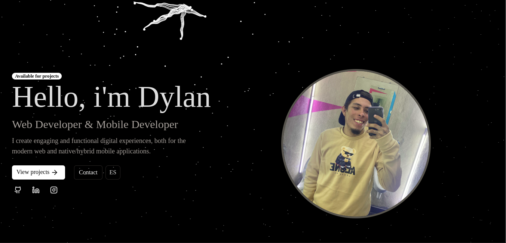

Welcome to DevSphere, my personal portfolio built with React and TypeScript! This project showcases my work, skills, and featured projects, crafted with modern technologies and best practices.

DevSphere homepage showcasing web development_
Follow these steps to run the project locally:
git clone git@github.com:DumbNoxx/DevSphere.git
cd DevSphere
npm install
npm run dev
Contributions are welcome! If you have any ideas or suggestions, follow these steps:
(git checkout -b feature/new-feature).(git commit -m 'Add some new feature').(git push origin feature/new-feature).This project is licensed under the MIT License. For more details, see the LICENSE.
Have a question or want to collaborate? Feel free to reach out!
Thanks for visiting DevSphere! I hope you enjoy exploring my work as much as I enjoyed building it. 😊